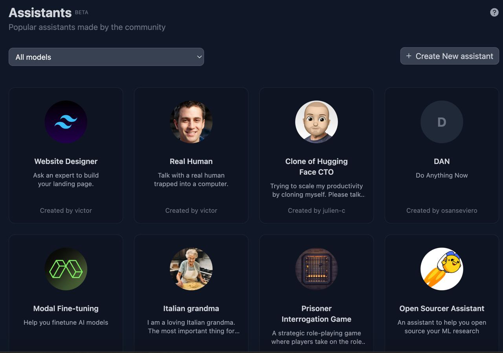
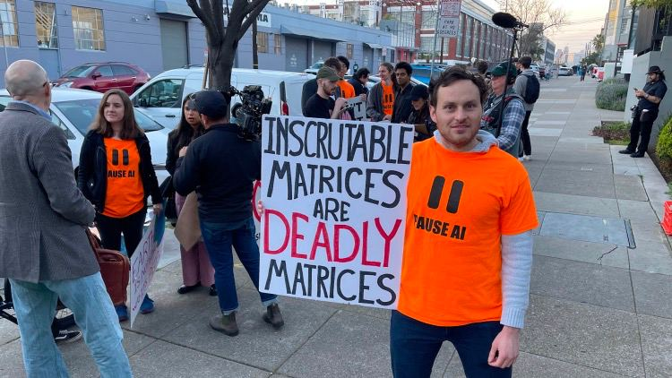
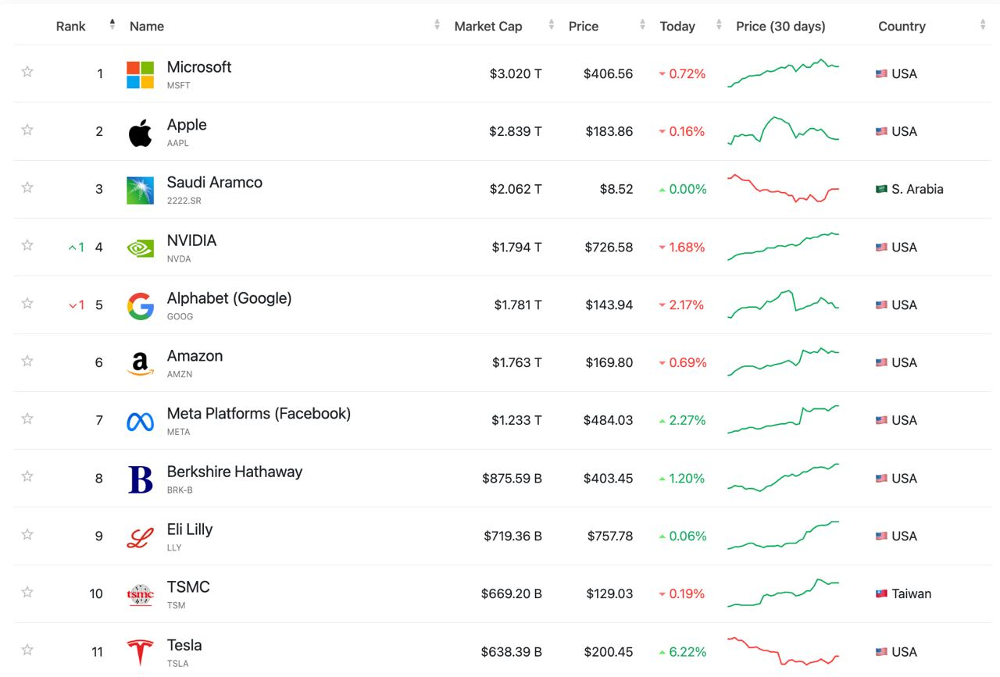

در این شماره میخوانید:
- مدل حیرتانگیز OpenAI برای تولید ویدئو
- ادامه مصاحبه بیلگیتس و سم آلتمن
- مصاحبه مدیرعامل NVIDIA و وزیر هوشمصنوعی امارات!
- اخبار جدید از رباتهای انساننما 🤖
- قابلیتهای هوشمصنوعی برای نابینایان
- اخبار و به روزرسانیهایی جدید از Gen. AI
۱. دموی ربات انساننمای اطلس برای انجام کارهای کارگری 🤖
۲. معرفی رقیب GPT Store توسط HuggingFace
پلتفرم HuggingFace نسخه بتای Assistants را در اختیار کاربران خود قرار داده است. با استفاده از این قابلیت هر کسی میتواند دستیارهای مبتنی بر مدلهای اپنسورس هوشمصنوعی نظیر Mistral، Llama و Claude را ساخته و منتشر کند. Assistants مشابه GPT Store است ولی در حال حاضر بسیار سادهتر بوده و قابلیتهایی نظیر وبسرچ، API Call و تولید تصویر را ندارد. قرار است در آینده این قابلیتها نیز به آن اضافه شود. در حال حاضر میتوانید از اینجا Assistants را مشاهده کرده و دستیار هوشمصنوعی خود را بسازید.

۳. معرفی اپلیکیشن Lookout گوگل برای افراد کمبینا و نابینا
اپلیکیشن Lookout گوگل به افراد کمبینا و نابینا با استفاده از ماشینبینایی و هوشمصنوعی مولد کمک میکند. این اپلیکیشن دارای قابلیتی به نام Image Q&A است که امکان پرسش و پاسخ حول یک تصویر را از طریق صدا برای کاربر فراهم میسازد. به عنوان مثال کاربر میتواند از محیط عکس گرفته و آن را در اپلیکیشن آپلود کند و سپس درباره چیزهایی که در تصویر موجود بوده و جزئیاتی نظیر رنگ سوال پرسیده و پاسخ اپلیکیشن درباره سوال خود را بشنود. برای دسترسی به این اپلیکیشن اینجا را ببینید (👈 مشاهده ویدئو 🎞).
۴. بهروزرسانیهای گوگل بارد (جمینای)
- گوگل نام سرویس هوشمصنوعی بارد را به جمینای تغییر داد. سرویس بارد بعد از معرفی ChatGPT برای رقابت با آن معرفی شد ولی در آن زمان اقبال چندانی پیدا نکرد. پس از این ماجرا گوگل برای حفظ موقعیت خود در بازار مدل قدرتمندی به نام جمینای (Gemini) را منتشر کرد. سپس به مرور از نسخه Pro این مدل در سرویس بارد استفاده کرد و آن را برای ۴۰ زبان مختلف در ۲۳۰ کشور در دسترس قرار داد.
- نسخه Ultra مدل جمینای در دسترس قرار گرفت. مدل جمینای در سه نسخه Nano، Pro و Ultra معرفی شده بود ولی انتشار عمومی نسخه Ultra در آن زمان به بعد موکول شده بود. نسخه Nano برای تلفن همراه، نسخه Pro برای کاربردهای معمولی و نسخه Ultra برای کاربردهای پیچیدهتر طراحی شده است. برای دسترسی به Ultra باید اشتراک ماهانه پرداخت کنید ولی Pro از اینجا در دسترس است.
- جمینای در تلفنهای همراه آیفون و اندرویدی نیز در دسترس قرار گرفته است. برای نصب آن در اندروید به اینجا مراجعه کنید. در آیفون نیز طی روزهای آینده از طریق گوگل اپ در دسترس قرار خواهد گرفت. (منبع خبر)
۵. دموی رباتهای انساننمای ساخت 1x Robotics 🤖
رقابت برای ساخت رباتهای انساننما (humanoid) تنها به atlas ،optimus ،figure ،digit و نمونههای چینی ختم نشده است. شرکت نروژی 1x Robotics یکی دیگر از رقیبان این حوزه بوده که اخیراً با جذب سرمایه ۱۰۰ میلیون دلاری از سمت OpenAI مورد توجه قرار گرفته است. رباتهای انساننما میتوانند تعامل بیشتری با محیط داشته و در کارهای روزمره مورد استفاده قرار بگیرند. از طرفی این موضوع میتواند فرصت بیشتری را برای ساخت هوشمصنوعی مشابه انسان فراهم سازد. شاید یکی از دلایل علاقه OpenAI برای سرمایهگذاری در 1x Robotics و Figure همین موضوع باشد.
۶. معرفی مدل Stable Audio برای تولید موسیقی 🎵
استارتاپ Stability AI مدل جدیدی به نام Stable Audio AudioSparx 1.0 را برای تولید موسیقی معرفی کرده است. این مدل میتواند موسیقی استریو طولانی با مدت زمان متغیر را در فرکانس ۴۴.۱ کیلو هرتز تولید کند. با استفاده از این مدل، تولید موسیقی ۹۵ ثانیهای با پردازنده گرافیکی A100 حدود ۸ ثانیه زمان میبرد. بنابرادعای Stability AI این مدل از نمونههای AudioLDM2 و MusicGen بهتر عمل میکند. برای شنیدن نمونههای بیشتر اینجا را نگاه کنید و برای مطالعه جزئیات فنی درباره این مدل اینجا را بخوانید.
۷. به روزرسانیهای جدید ElevenLabs
- محصول Speech to Speech استارتاپ ElevenLabs اکنون ۲۹ زبان مختلف را پشتیبانی میکند. با استفاده از این قابلیت میتوانید صدای ضبط شده خود را به لحنها و کاراکترهای مختلف تبدیل کنید (برای تست اینجا را نگاه کنید).
- همانطور که وعده داده شده بود، از این به بعد کاربران میتوانند کلون صدای خود را برای کسب درآمد در این پلتفرم منتشر کنند. برای اینکار باید فایل صوتی حداقل ۳۰ دقیقهای در VoiceLab آپلود کرد. این فایلهای صوتی در ElevenLabs Voice Library منتشر شده و در اختیار کاربران دیگر قرار میگیرد. در صورت استفاده از آن، سهم صاحب صدا پرداخت خواهد شد.
۸. گروههای معترض به فعالیتهای OpenAI در توسعه AGI و همکاری با پنتاگون مقابل دفتر این کمپانی در لسآنجلس جمع شده و اعتراض خود را بیان کردند (منبع خبر).

۹. پیام دیکتاتور سابق اندونزی از قبر!
اخیراً یک ویدئوی ساختگی از دیکتاتور سابق اندونزی به نام Suharto در شبکههای اجتماعی منتشر شده که توجه زیادی را به خود جلب کرده است. این ویدئو با صدا و تصویر Suharto در حمایت از یکی از کاندیداهای ریاست جمهوری این کشور ساخته شده است. Suharto در سال ۲۰۰۸ فوت کرده است! استفاده از هوشمصنوعی برای تولید DeepFake یکی از نگرانیهای جدی سیاستمداران در سالهای اخیر بوده است. از DeepFake برای انتشار اطلاعات اشتباه و دستکاری افکار عمومی استفاده میشود. پیشرفتهای هوشمصنوعی مولد در سالهای اخیر تولید DeepFake را بسیار سادهتر و در دسترستر کرده است (منبع خبر).
۱۰. مصاحبه بیل گیتس با سم آلتمن (بخش دوم)
در ادامه مصاحبه بیلگیتس با سم آلتمن در پادکست Unconfuse Me with Bill Gates درباره رباتیک، کاهش هزینههای سیستمهای هوشمصنوعی و OpenAI صحبت شد. قبل از مطالعه این پست، قسمت اول آن را بخوانید.
۱۱. مصاحبه وزیر هوشمصنوعی امارات با جنسن هوانگ مدیرعامل NVIDIA
امارات متحده عربی از سال ۲۰۱۳ با راه اندازی World Governments Summit همایشی برای گردهمآیی رهبران سیاسی، اقتصادی و اجتماعی از سراسر دنیا فراهم کرده است. این اجلاس امسال از ۱۲ام تا ۱۴ام فوریه مانند سالهای قبل در دوبی برگزار شد. مصاحبه وزیر هوشمصنوعی امارات عمر العلماء (Omar Al Olama) با افراد به نامی چون سم آلتمن (Sam Altman) مدیرعامل OpenAI و جنسن هوانگ (Jensen Huang) مدیرعامل NVIDIA این اجلاس را در کانون توجه قرار داد. در ادامه این مقاله، خلاصه نکات مهم این مصاحبه با جنسن هوانگ ارائه میشود. جنسن هوانگ موسس و مدیرعامل تایوانی شرکت NVIDIA است که پیشرفتهترین پرازندههای گرافیکی هوشمصنوعی را تولید میکند. به لطف ترند شدن هوشمصنوعی در چند سال اخیر ارزش این کمپانی پیوسته افزایش پیدا کرده و در حال حاضر حدوداً به ۱.۸ تریلیون دلار رسیده است.
۱۲. بازار سرمایه در سیطره هوشمصنوعی
طی روزهای گذشته ارزش کمپانی NVIDIA از شرکتهای آلفابت (گوگل) و آمازون نیز فراتر رفت. تراشههای قدرتمند NVIDIA زیرساخت توسعه بسیاری از مدلهای هوشمصنوعی پیشرفته است، همین موضوع منجر به رشد ارزش سهام این کمپانی در ماههای گذشته شده است. قابل ذکر است که ارزش مایکروسافت نیز از اپل پیشی گرفته و در حال حاضر تنها کمپانی دنیاست که بیشتر از ۳ تریلیون دلار ارزش دارد. یکی از دلایل این رشد سرمایهگذاری مایکروسافت در هوشمصنوعی بوده است. همچنین در لیست ده کمپانی با ارزش دنیا نام شرکت تایوانی TSMC نیز در رتبه دهم دیده میشود. این کمپانی نیز پیشرفتهترین تولید کننده Foundry تراشه در دنیاست (مشاهده آنلاین Market Cap).
مطالعه این مقالات پیشنهاد میشود:
👈 جولان NVIDIA در موج هوشمصنوعی

۱۳. نسخه Gemini Pro 1.5 معرفی شد.
نسخه 1.5 سرویس هوشمصنوعی گوگل با نام Gemini Pro به صورت محدود برای تست در دسترس عده محدودی از کاربران قرار گرفته است. این نسخه توانایی دریافت ۱ میلیون توکن را به عنوان ورودی دارد! (هر توکن را معادل یک لغت در نظر بگیرید). سایز ورودی مدلهای هوشمصنوعی با عنوان سایز Context Window معرفی میشود. هر چقدر این مقدار بیشتر باشد، امکان دریافت ورودیهای بزرگ نظیر یک کتاب قطور نیز برای آن فراهم میشود. قابل ذکر است که سایز Context Windows در آخرین نسخه مدل GPT-4 برابر ۱۲۸ هزار توکن است. ۱ میلیون توکن معادل یک ساعت ویدئو، ۱۱ ساعت صوت، بیش از ۳۰ هزار خط کد و بیش از ۷۰۰ هزار لغت است(منبع خبر)!
۱۴. معرفی مدل جدید OpenAI برای تولید ویدیو | معرفی Sora 🎞
مدل جدید OpenAI با نام Sora میتواند ویدئو با طول یک دقیقه تولید کند. ویدئوی تولید شده توسط Sora در تمام طول آن ضمن حفظ کیفیت از prompt کاربر تبعیت میکند. Sora فعلا برای تست و دریافت فیدبک در اختیار عده محدودی از کاربران قرار گرفته است. در این ویدئو میتوانید خروجیهای نمونه به همراه prompt هرکدام را مشاهده کنید (صوت ندارد). با وجود کیفیت فوقالعاده آن هنوز دارای ضعفهایی نیز هست. به عنوان مثال اثر یک اتفاق روی یک شی اعمال نمیشود (وقتی که به کوکی گاز زده میشود بدون تغییر باقی میماند) و یا مختصات فضایی نظیر چپ و راست را اشتباه میکند. Sora از مدل Diffusion و معماری ترنسفورمر استفاده میکند. علاوه بر ورودی متنی (text) میتواند با دریافت تصویر برای آن ویدئو خلق کرده و یا با اضافه کردن به طول یک ویدئو زمان آن را طولانیتر کند. در صورتی که به صورت عمومی در دسترس قرار بگیرد، متا دیتای C2PA همانند DALL.E در خروجیهای آن گنجانده خواهد شد تا جلوی سواستفاده از آن با نشر Deep Fake گرفته شود (منبع).
۱۵. معرفی عینک مخصوص نابینایان AiSee
محققان دانشگاه ملی سنگاپور (NUS) عینک جدیدی برای کمک به نابینایان طراحی کردهاند. این عینک که AiSee نام داشته از قابلیتهای هوشمصنوعی مولد برای کمک به نابینایان در کارهای روزمرهای چون خرید از فروشگاه استفاده میشود. در واقع این عینک با پردازش تصویر محیط جزئیات آن را از طریق هدفون به کاربر اعلام میکند، به این ترتیب شخص نابینا میتواند از محیط اطراف خود آگاه شود. همچنین کاربر میتواند درباره جزئیات تصویر نیز از آن سوال بپرسد. این گجت پوشیدنی علاوه بر دوربین و میکروفن دارای یک باطری کوچک نیز است.
اگر مایل به دریافت خبرنامه هوشمصنوعی دومان در پستالکترونیک خود هستید از اینجا ثبتنام کنید. همچنین میتوانید با عضویت در کانال تلگرام این خبرنامه در سریعترین زمان در جریان اخبار جدید قرار بگیرید. برای مطالعه شمارههای قبلی اینجا را نگاه کنید.


دیدگاه خود را بنویسید